ゾンビがやってきた
🎯 この章でできるようになること
- 敵を主人公のほうへ向かせて、追いかけさせられる
- 3Dモデルのアニメーションを名前で切りかえられる
- 体力（HP）を変数で数えて、少しずつ減らせる
- UIレイヤーに文字を置いて、HPを画面に出せる
4-1. この章で作るしくみ
街にゾンビを3体置いて、主人公を追いかけてくるようにします。
ゾンビにくっつかれている間は、主人公の HP（体力）がどんどん減っていきます。
歩くアニメーションにする
乗っていない
HP を少しずつ減らす
4-2. ゾンビを置こう
「オブジェクト」の「＋」から「Zombie Apocalypse」のパックを開き、「Character」のフォルダを開きます。
緑色の「Zombie Basic」を選んで「シーンに追加」を押します。
（上の「アセットを検索」の欄に zombie basic と入力しても見つかります。）
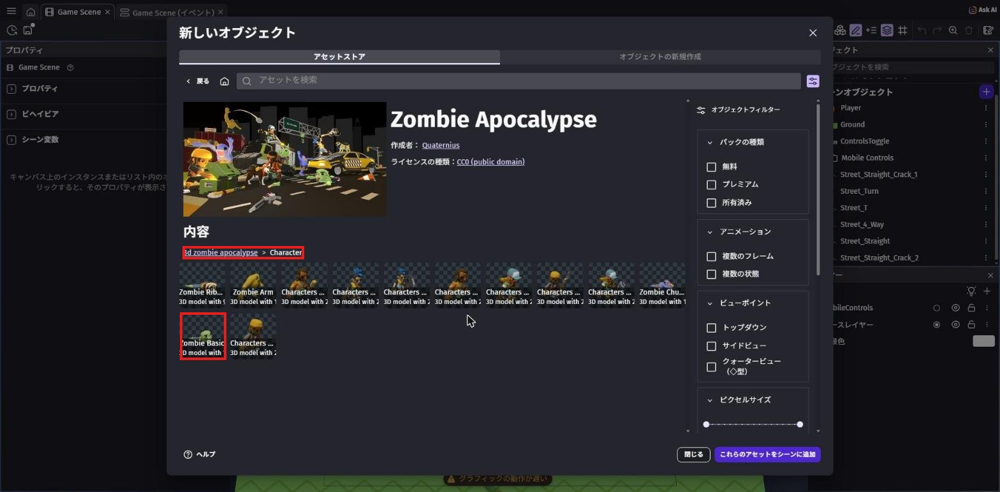
一覧に「Zombie_Basic」ができます。
右の「⋮」を押して「名前の変更」を選び、名前を Zombie にして Enter。
次に Zombie をクリックして、左の「デフォルトのサイズ」の 幅・高さ・奥行き を全部 70 にします。
主人公（高さ60）より少し大きいくらいです。
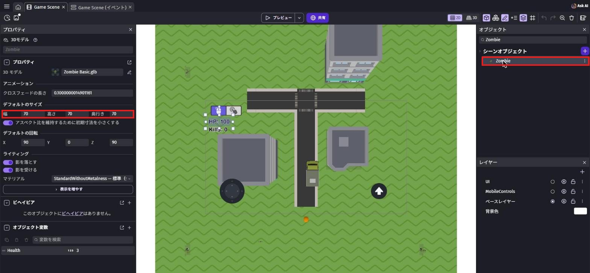
名前を変えるときの注意
名前の欄が入力できる状態になっていないのにキーを押すと、そのキーが「ショートカット」として動いてしまいます。
パネルが閉じたり、ほかのものが選ばれたりしたら、あわてずに「名前の変更」からやり直そう。
一覧の Zombie を、シーンの草原にドラッグします。
主人公から少しはなれた場所に、3回くり返して3体置こう。
上から見ると小さく見えますが、それで大丈夫です。
4-3. HP を用意しよう
シーンの何もないところをクリックすると、左に「Game Scene」のプロパティが出ます。
「シーン変数」の右の、四角から矢印が出たマークを押します。
「変数を追加」を押して、名前を PlayerHealth、型は「数値」のまま、値を 100 にして「適用」。
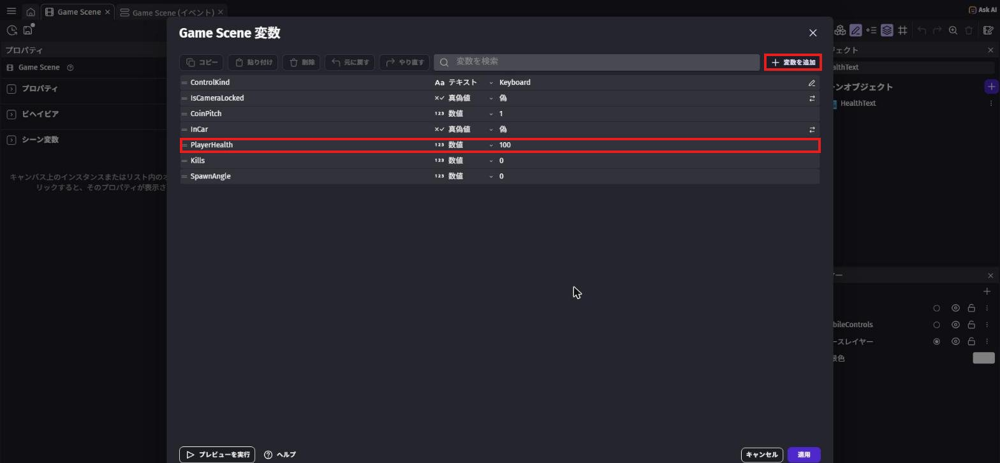
PlayerHealth を 数値 で 100（赤枠）HP の文字は、カメラが動いても画面の左上にずっと表示させたいです。
そこで、カメラが動いても画面に貼りついたままの層、レイヤーを作ります。
画面右上のボタンの列にある、紙が重なったマークのボタンを押すと、右下に「レイヤー」のパネルが開きます。
パネルの右上の「＋」を押して、名前を UI にします。
そのあと、UI の行の右にある「○」を押して、●にします。
●がついたレイヤーに、これから置くものが入ります。
街やゾンビは下のシート（ベースレイヤー）、HP の文字は上のシート（UI）に描くイメージ。
カメラが動かすのは下のシートだけなので、UI の文字は画面の同じ場所に出続けます。
最初からある「MobileControls」は、スマホ用のボタンを置くためのレイヤーです。
「＋」から「オブジェクトの新規作成」を開き、テキスト で検索して「テキスト」を選びます。
次のように設定して「適用」を押します。
- オブジェクト名:
HealthText - サイズ:
36、「太字」にチェック - 最初に表示するテキスト:
HP: 100 - 「輪郭」の「有効」にチェック、太さ:
4（白いふちどりで読みやすくなる）
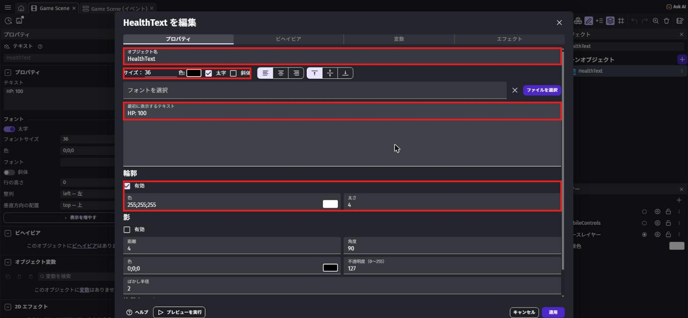
一覧の HealthText を、シーンの中の四角い線（ゲーム画面のはんい）の中にドラッグします。
置いた文字をクリックして、左の X を 20、Y を 110 にします。
レイヤーの欄が「UI」になっていればOK。
最後に、レイヤーパネルの「ベースレイヤー」の「○」を押して、●をベースレイヤーにもどしておこう。
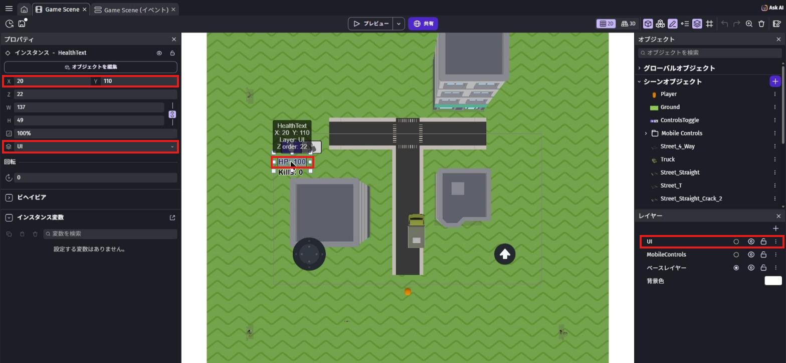
4-4. ゾンビを動かすイベントを作ろう
イベントシートで、新しいグループ Zombie を作ります（「+ 追加...」→「イベントグループ」）。
グループをクリックしてから Shift + D で、中にイベントを作ります。
グループ名の最後に「d」がついてしまった
名前を入力している途中で Shift + D を押すと、「Zombied」のように文字が入ってしまいます。
Backspace で消して Enter で決めてから、もう一度 Shift + D を押そう。
条件はなし。
アクションに 回転させる で検索して「別のオブジェクトに向けて回転させる」（ほかのオブジェクトのほうを向く）を選びます。
オブジェクトは Zombie、目標オブジェクトは Player、角速度（回る速さ）は 0。
0 にすると、すぐにそっちを向きます。
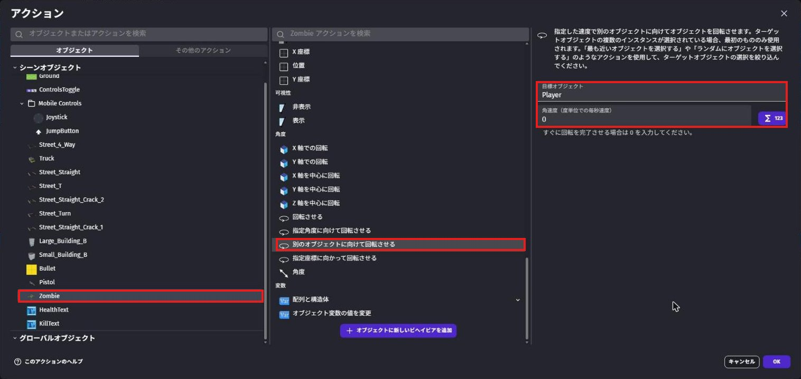
今のイベントをクリックして Shift + A で、下に新しいイベントを作ります。
条件は「2つのオブジェクト間の距離」で Zombie と Player、距離 50。
「条件を反転」を ON にして、「50 より遠い」にします（第3章の弾と同じ）。
アクションは2つです。
フォースを追加で検索 →「オブジェクトに向かって移動するフォースを追加する」、オブジェクトはZombie、目標オブジェクトはPlayer、速度は80、下は「瞬間的」のままアニメーション名で検索 →「アニメーション名」、オブジェクトはZombie、アニメーションの名前は一覧から「Walk」（素材についている名前なので、日本語の画面でも英語のまま表示されます）
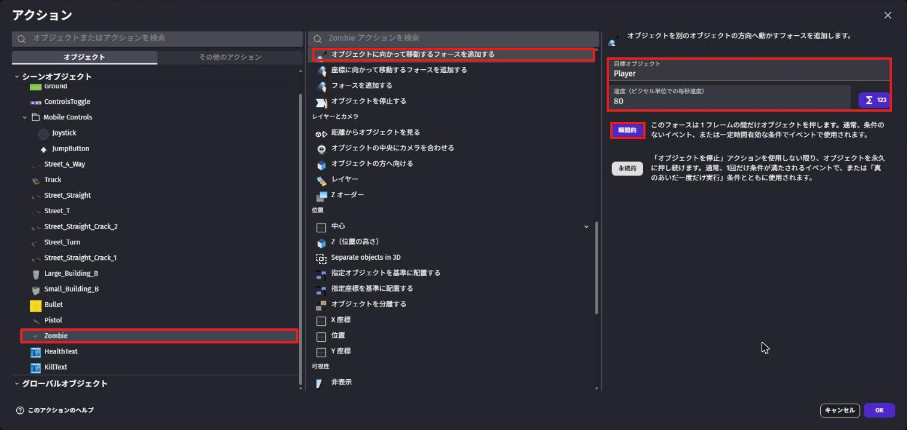
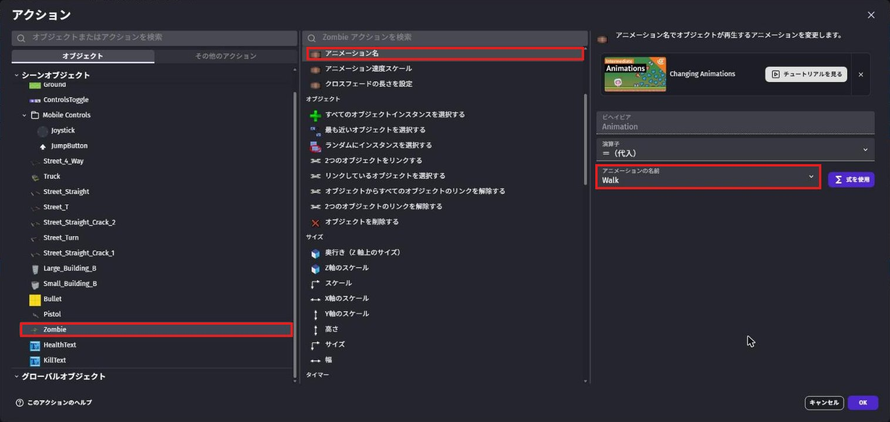
ゾンビは「瞬間的」（1回だけ押す）にします。
条件が合っている間は毎回このイベントが動くので、遠い間だけ押され続けて、近づいたら止まります。
もう一度 Shift + A で新しいイベントを作ります。
条件は2つ。
- 「2つのオブジェクト間の距離」で
ZombieとPlayer、距離50（「条件を反転」は OFF のまま＝50 より近い） - 「変数の値」で
InCarが 偽（トラックに乗っていない）
アクションも2つ。
- 「アニメーション名」で
Zombieを「Punch」（パンチ） 変数の値を変更で検索 →「変数の値を変更」、変数はPlayerHealth、演算子は「－（引く）」、値は下の式
20 * TimeDelta()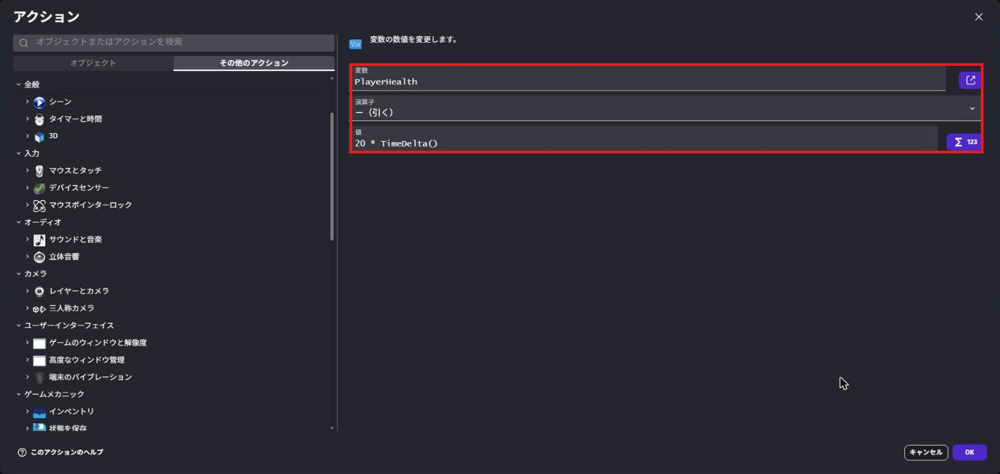
20 * TimeDelta() を引く（赤枠）ゲームは1秒に60回くらい画面をかきかえるので、TimeDelta() はだいたい 0.016 です。
20 * TimeDelta() を毎回引くと、ちょうど「1秒で20へる」になります。PC が速くても遅くても、同じペースでへるのがポイントです。
もう一度 Shift + A で新しいイベントを作ります。
条件はなし。
アクションの画面で、左の一覧から HealthText を選び、いちばん上の「テキスト」を選びます。
演算子は「＝（代入）」のまま、「テキスト」の欄に次の式を入れます。
"HP: " + ToString(round(PlayerHealth))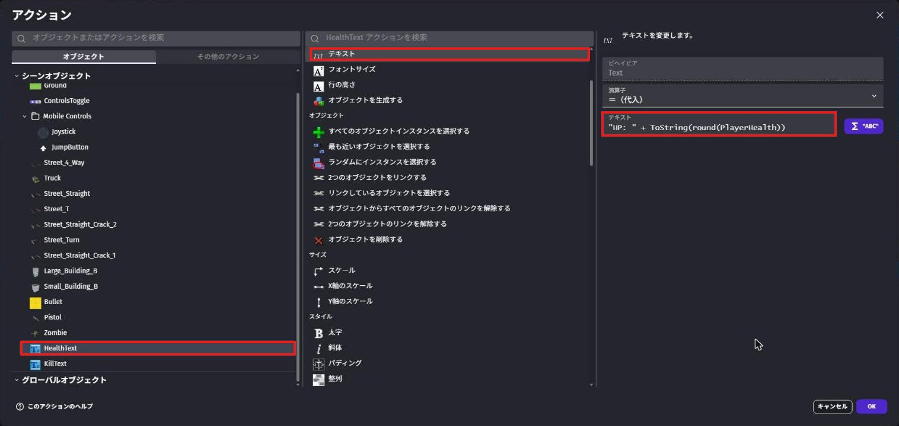
HP は 0.33 ずつのように細かくへるので、そのまま出すと「HP: 87.66666」のようになってしまいます。
4-5. ためしてみよう
保存してから「プレビュー」を押します。
左右からゾンビが歩いてきて、主人公に近づくとパンチを始めます。
パンチされている間、左上の HP がどんどんへっていきます。
走ってにげたり、トラックに乗ったりしてみよう。
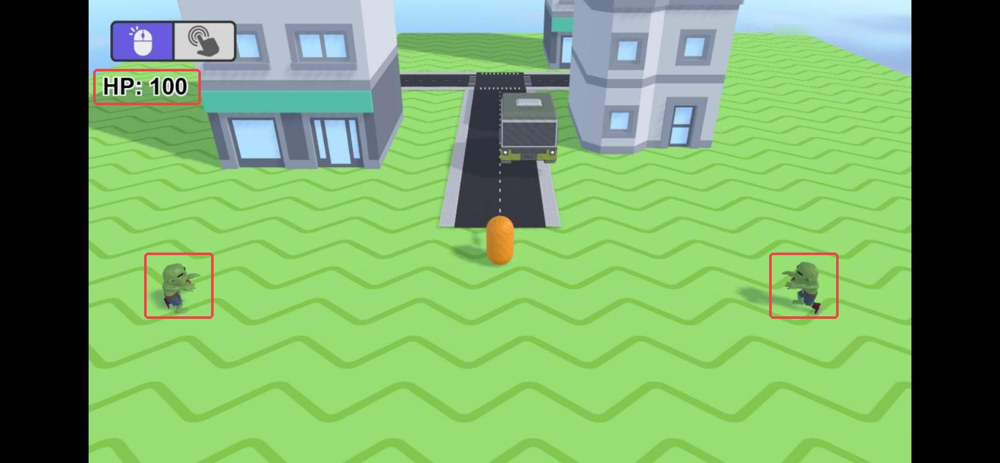
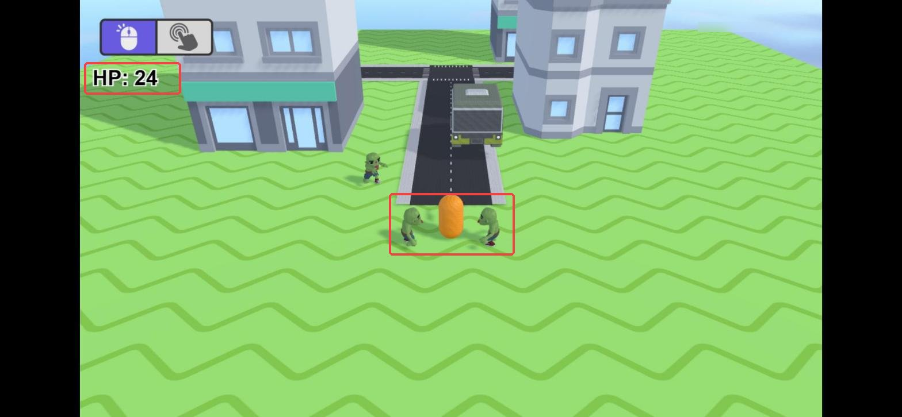
次の章で、ゲームオーバーのしくみを作ります。
💪 やってみよう
ゾンビの速さ（80）や、HP のへる量（20）を変えて、ちょうどいいむずかしさにしてみよう。
ゾンビをもっとたくさん置いてみるのもおもしろいよ。
ヒント
Character フォルダには「Zombie Chubby」や「Zombie Ribcage」など、ほかのゾンビもいます。
オブジェクトを右クリックして「アセットの交換」を使うと、イベントはそのままで見た目だけ入れかえられます。
4-6. 🚨 つまずきポイント集
ゾンビが動かない
原因: 2つ目のイベントの「条件を反転」が OFF になっている。
直し方: 条件をダブルクリックで開いて、「条件を反転」を ON にしよう。
ON になると、条件の前に赤いマークがつきます。
ゾンビが歩かずにすべってくる
原因: アニメーションの名前を選んでいない。
直し方: 「アニメーション名」のアクションを開いて、「アニメーションの名前」の一覧から「Walk」を選びなおそう。
HP の文字がカメラといっしょに動いてしまう
原因: HealthText がベースレイヤーに置かれている。
直し方: 置いた HealthText をクリックして、左のレイヤーの欄を「UI」に変えよう。
HP の文字が出ない・「HP: 100」から変わらない
原因: 4つ目のイベントの式がまちがっている、またはそのイベントがない。
直し方: 上の式をコピーして貼りつけなおそう。
"HP: " のダブルクォーテーション（"）を忘れやすいので注意。
4-7. ✅ チェックリスト
全部チェックできたら第4章クリア！
🎉 次回は、銃とトラックでゾンビをたおせるようにするよ。